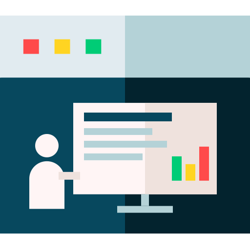
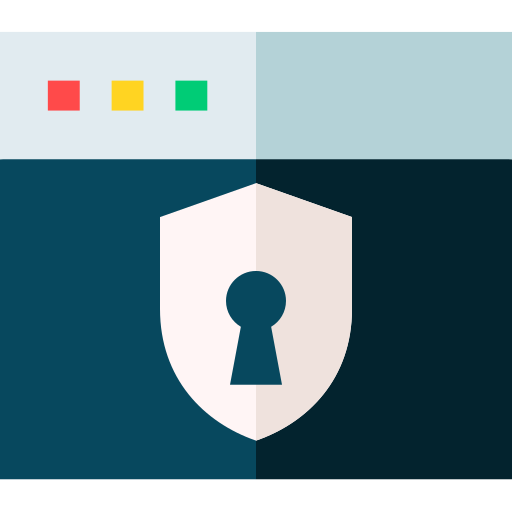

Cybersécurité au quotidien
Hameçonnage, mots de passe, ingénierie sociale, appareils et Wi‑Fi. Pour que votre équipe reconnaisse les pièges avant de cliquer.


Cinq ans après la fin du cégep, je coordonne le département d'informatique du Collège O'Sullivan de Montréal et j'y enseigne la cybersécurité. J'offre aussi des formations en informatique aux équipes et aux particuliers. L'étudiant curieux est devenu celui qui pose les questions au tableau.

Comme coordonnateur du département d'informatique, je vois la formation dans son ensemble plutôt qu'un cours à la fois. Répartition des cours, suivi des étudiants et des stages, arrimage entre les enseignants et lien avec la direction.

Je donne les cours de programmation et de sécurité en Techniques de l'informatique, et j'accompagne les étudiants dans leur projet de session, de la conception du laboratoire jusqu'à la présentation finale. Je forme en parallèle des adultes en emploi au Cégep de Saint-Laurent, en ligne, sur la sensibilisation à la cybersécurité et les outils collaboratifs.

Je termine ma dernière année de baccalauréat en cybersécurité à Polytechnique Montréal, un cheminement bâti sur trois certificats, analyse opérationnelle, cyberenquête, puis architecture et gestion. La suite que je vise est une maîtrise recherche en informatique, du côté de la cryptographie et de l'intelligence artificielle.

Avant l'enseignement, j'ai administré des serveurs Linux et Windows, dont trois ans dans l'hébergement web. C'est là que j'ai appris ce qui casse pour vrai, et c'est encore ce que je ramène en classe quand une notion reste trop théorique.
Des formations concrètes en informatique et en cybersécurité, pour les équipes, les organismes et les particuliers. Même approche qu'en classe : on pratique plus qu'on écoute.
Hameçonnage, mots de passe, ingénierie sociale, appareils et Wi‑Fi. Pour que votre équipe reconnaisse les pièges avant de cliquer.
Teams, Outlook, SharePoint et OneDrive, pour arrêter de chercher ses fichiers et de se perdre dans ses courriels. Adaptée aux outils que vous utilisez déjà.
Utiliser les assistants d'IA pour gagner du temps, sans y mettre de données confidentielles. Des exemples tirés de votre réalité, pas d'une démo.
Des séances de deux heures, à votre rythme, pour être à l'aise avec l'ordinateur au travail comme à la maison. Word, Excel, courriels, fichiers et sécurité de base, avec des exercices à garder.
Un court échange pour comprendre vos besoins, votre niveau et les outils que vous utilisez.
Un contenu adapté à votre équipe, avec des exemples tirés de votre quotidien.
Des séances en ligne ou sur place, avec un aide-mémoire et des exercices à garder.
En français ou en anglais · En ligne ou sur place, région de Montréal
DEMANDER UNE FORMATIONCollège O'Sullivan de Montréal, informatique
Répartition des cours, suivi des étudiants et des stages, arrimage de l'équipe enseignante et lien avec la direction.
Cégep de Saint-Laurent, formation continue
Formation en ligne pour adultes en emploi. Sensibilisation à la cybersécurité, Microsoft 365 (Teams, Outlook, SharePoint, OneDrive et Planner), Zoom et usage responsable de l'intelligence artificielle.
Collège O'Sullivan de Montréal, Techniques de l'informatique
Programmation Python, services d'annuaire avec Active Directory, surveillance des réseaux et introduction à la cybersécurité, plus l'encadrement du projet de session et des stages.
Polytechnique Montréal, fin prévue en 2027
Cheminement par certificats. Analyse opérationnelle et cybersécurité, cyberenquête, architecture et gestion de la cybersécurité.
Likuid, hébergement web
Trois ans à administrer des serveurs Linux et Windows et à répondre aux besoins d'hébergement des clients. C'est de là que viennent la plupart de mes exemples en classe.
Collège Montmorency, réseaux et sécurité
Là où tout a commencé. La première version de ce site date de cette époque.


Toujours partant pour un nouveau projet.
© Saïd Hamdane, 2026 · Formation informatique et cybersécurité · Laval (Québec)
Illustrations : Flat Icons, Freepik, Flaticon